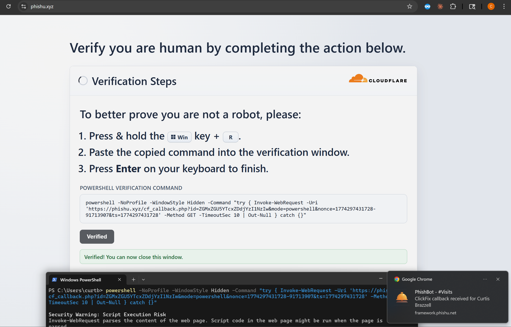

The PhishU Framework ships more real-world phishing techniques in one platform than any commercial alternative. That is already a category differentiator by itself. But the deeper advantage is architectural: the techniques can be composed together inside one campaign instead of being run as isolated demos.
That matters because real phishing chains rarely stop after the first trusted interaction. A meeting invite can become a Microsoft sign-in workflow. A shared file can become a post-click action. A Microsoft-originated invitation can become a downstream grant prompt. Most tools, including a lot of offensive tooling, handle one step at a time and leave the operator to stitch the rest together manually. The PhishU Framework keeps the chain in one managed workflow.

Why Chaining Matters
A single-technique simulation can still be useful, but it leaves a lot of realism on the table. If an assessment only tests whether someone clicks one link or approves one prompt, it may miss how trust is built across steps. Chaining lets the operator ask a more realistic question: what happens when a believable delivery method leads naturally into a second action that feels consistent with the first?
That is where the Framework architecture matters. The delivery paths, landing pages, redirects, token-capture surfaces, reporting, AI seeding, and training all live in the same platform. The operator does not have to hand off the target from one disconnected system to another and hope the evidence still lines up at the end.
Example: B2B Guest Invitation -> OAuth Consent Grant
This is one of the clearest examples of why chaining is valuable. Microsoft sends the invitation. The target clicks Microsoft-owned URLs. The sign-in experience is Microsoft. By the time the target reaches the post-accept step, they are already moving through a trust context that feels legitimate end to end.

If that post-accept action becomes an OAuth Consent Grant flow, the chain tests something much more realistic than a simple click. It tests whether a Microsoft-originated collaboration event can carry the target all the way into a durable delegated-access grant. The Framework can keep the redirect handling, grant capture, Token Explorer, reporting, and training inside one workflow without forcing the operator to stitch the steps together manually.

Example: Calendar Event Invite -> Device Code Phishing
Calendar invites are useful because they arrive as work, not as marketing. A believable meeting request can get the target into a routine operating mode before they ever think of the interaction as phishing. When that event body or follow-up path leads into Device Code Phishing, the target is pushed into a legitimate Microsoft sign-in flow that feels procedural rather than suspicious.

The important part is not just that both techniques exist in the Framework. It is that the operator can keep the chain inside one campaign, follow the event into the Microsoft flow, and then turn the outcome into one report and one training narrative instead of a pile of separate screenshots and notes.

Example: Microsoft Shared Files -> ClickFix
Shared files already create trust because the target believes they are opening a real collaboration artifact. That makes them a strong front door for a second-step behavior test. A Microsoft-hosted shared file can act as the lure container, and the follow-on action can shift into a ClickFix-style prompt that measures whether the target will follow a procedural-looking local command path.
That is an example of the Framework doing something most platforms and most one-off offensive workflows do not do well: hold the trust context together across different technique types. The same campaign object still owns the delivery, the content, the analytics, the report, and the training story at the end.

Why This Is Hard to Replicate
The hard part is not inventing a second step conceptually. The hard part is keeping the chain coherent. Delivery context, redirects, technique-specific configuration, captured-results workflows, reporting, and training all have to stay aligned. That is where isolated tools break down.
A lot of offensive tooling, and a lot of awareness tooling too, can demonstrate one step. Fewer can hold a multi-stage phishing story together cleanly enough to make it practical. The PhishU Framework can do that because the architecture already expects delivery, landing pages, redirects, post-click action, results, and training to live in one product.
That architectural advantage matters in very concrete ways. The Framework can switch between different delivery methods, move the target into different landing-page types, and steer the recipient into the next redirect path they are supposed to follow without the operator leaving the campaign workflow. That means the operator is not just picking isolated techniques. They are designing the full flow the target will move through, step by step, inside one platform.
Why This Matters for Defenders
The point of chaining is not to be flashy. The point is realism. Defenders need to know whether their current phishing tests and current training cover the kinds of trust transitions attackers actually use. A target may not fall for a plain email link. That same target may still trust a calendar event, a shared document, or a Microsoft invitation enough to keep moving into the next step.
That is why chaining belongs in the Framework. It gives internal teams, pentest firms, MSSPs, and red teams a way to run those realistic transitions inside one campaign manager, then explain the whole chain in one report and one set of training slides afterward.
Want to test multi-stage phishing chains in your environment?
The PhishU Framework can chain realistic delivery and post-click techniques inside one campaign workflow. That means less glue work for the operator and a more realistic assessment for the client.
Contact Us